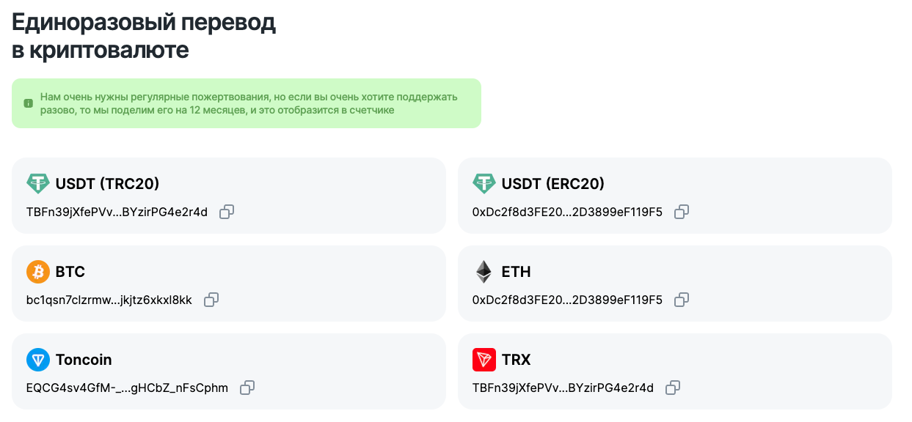
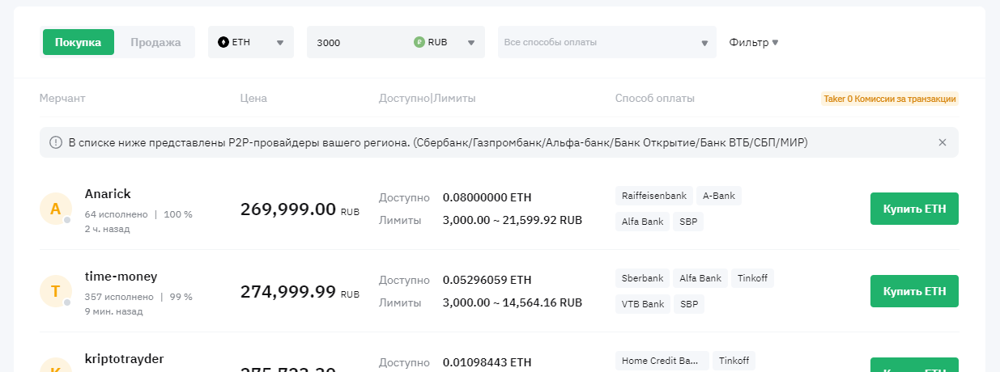
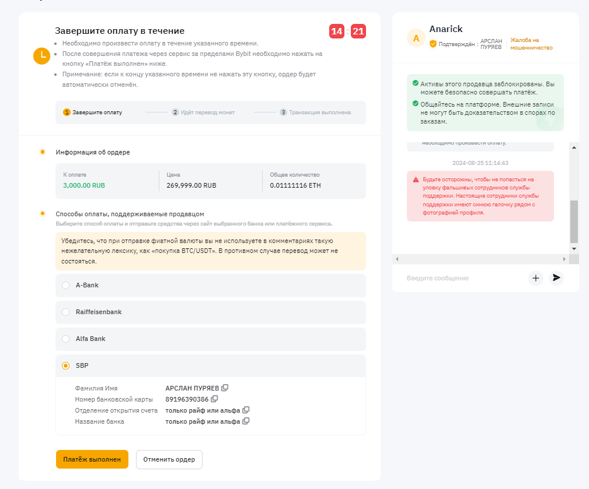
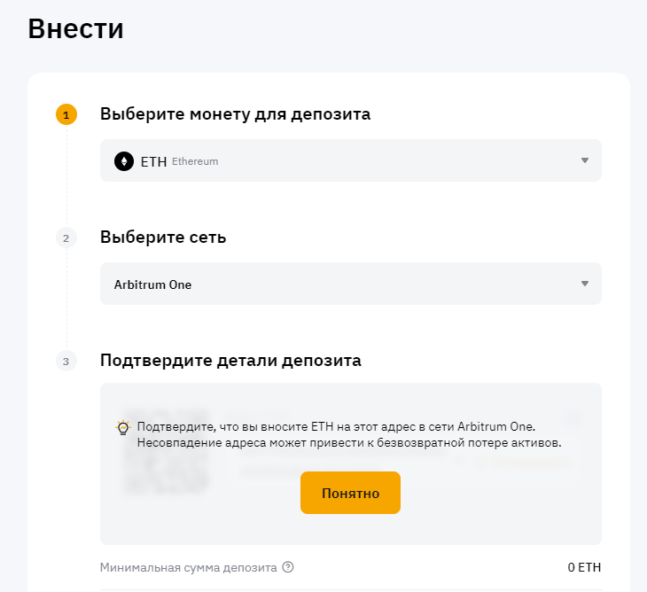
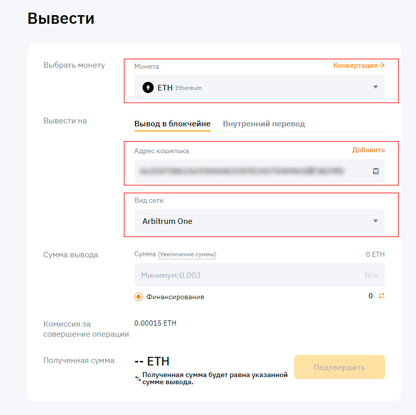
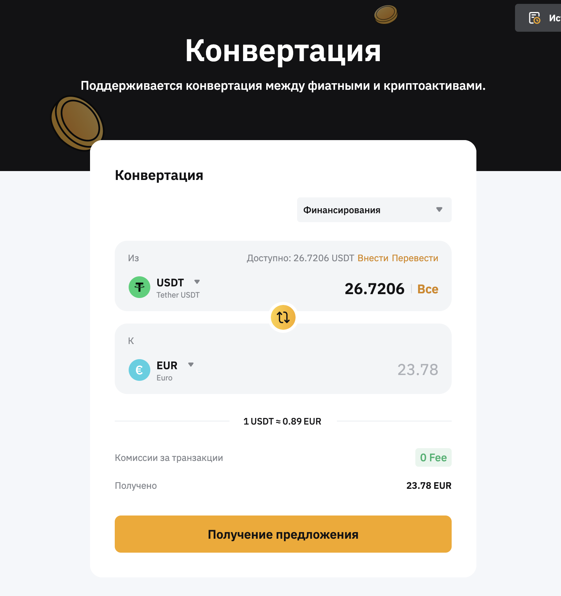

Crypto
- coinmarketcap.com - мониторинг курса токенов
- chainlist.org - мониторинг блокчейн сетей
- bybit.com - крипто-биржа bybit
- Metamask - Metamask-кошелек
- Trust Wallet - Trustwallet-кошелек
- Telegram wallet - Telegram-wallet
Криптовалюта
Криптовалюта - цифровая незримая валюта, существующая только в виде кода в сети интернет. Нет единого центра, который бы отвечал за криптовалюту, это под-сеть, которую поддерживают майнеры, внутри интернета. В 2009 году появился биткойн. В 2017 отмечен резкий рост заинтересованности людей криптовалютой, в связи в ростом стоимости биткойна.
Преимущества криптовалюты
- Возможность передавать криптовалюту в любую точку мира за минимальную / нулевую комиссию.
- Доступность транзакций осуществляется 24/7.
- Анонимность. При переводе с одного кошелька на другой известен только номер счета.
- Быстродействиe. Транзакции осуществляются мнгновенно.
- Глобальная сеть бл�окчейна уже настолько мощная, что превышает мощность любого супер-компьютера в мире.
- Смарт-контракты.
- Нет посредников. P2P.
- Нет политического и государственного надзора.
- Криптовалюта как средство сбережения
- Криптобиржа как способ заработка
Варианты операций с криптовалютой
- Простой перевод крипты с кошелька на кошелек. Кошелек --> Кошелек. Взымается небольшая комиссия за перевод (самая анонимная).
- Покупка криптовылюты на бирже. ByBit --> P2P -> Активы
- Продажа крипты на бирже. ByBit --> P2P -> Вывод на карту.
- Пополнение своего счета на бирже. ByBit --> Активы --> Внести. Можно пополнить с любого кошелька
- Конвертация криптовалюты в кошельке или на бирже.
Блокчейн
Блокчейн - технология открытой БД, используемая для хранения транзакций криптовалюты. По сути распределенная БД в виде огромной таблицы (очень много гигабайт), в которой храняться все данные о транзакциях, счетах, токенах, событиях. Состоит из последовательно идущих за собой блоков. Её нельзя подменить или перезаписать. Как супер-надежная банковская сеть. Используются закрытые ключи для просмотра личных данных. Эту сеть поддерживают майнеры по всему миру. Блок в себе хранит хэш (id1) предыдущего блока, хэш (id2) данного блока (отправитель, получатель, кол-во токенов) и данные блока.
- При изменении данных блока будет изменен его хэш, что в конечном итоге запустит цепную реакцию несоответствий всех хэшей предыдущих блоков во всех блоках цепи - это и есть главная особенность блокчейна - защита от фальсификаций.
- P2P-сеть. Так как блокчей децентрализован, то проверку на валидность блоков осущесвляют сразу несколько участников сети.
- Создание одного нового блока занимает около 10 миниут, как доп. мера безопасности.
Блокчейн сети
Блокчейн сети - различные виды блокчейнов. С появлением новых видов токенов стали появляться новые сети для возможности конкурирования друг с другом. У каждой сети есть свой нативный токен. Но эти сети, как правило, также поддерживают другие виды токенов. При переводе криптовалюты с одного кошелька на другой нужно учитывать, чтобы кошелек поддерживал выбранную сеть при отправке, иначе средства могут пропасть, так как у криптовалюты нет возвратных транзакций. Каждая сеть имеет свои комиссии при транзакциях, у кого-то они больше, у кого-то меньше.
Наиболее известные блокчейн-сети:
- Bitcoin
- BNB Smart Chain Mainnet (BNB)
- Etherium
- Arbitrum One, Ethereum Mainnet, Base, Blast, Linea, OP Mainnet (ETH)
- Solana
- Polygon Mainnet (MATIC)
- Аvalanche C-Chain (AVAX)
У каждой сети есть свой нативный токен, тот токен под который эта сеть была заточена. Отправлять или конвертировать криптовалюту в рамках одной сети, как правило, можно достаточно быстро и с минимальной комиссией. Если нужен перевод криптовалюты из одной сети в другую, то можно воспользоваться так называемымы "мостами", но за такой перевод обычно взымается большая комиссия.
Майнинг
Майнинг - 2 задачи: подтверждение транзакций и создание новых блоков в блокчейне. Каждай транзакция требует нескольких подтверждений сети. Майнеры как раз подтверждают эти транзакции. За что они получают награду в виде комиссии криптовалютой. Майнеры объединяются в POOL для большей эффективности.
Токены (коины)
Токены - различные виды криптовалюты. Различные токены имеют различный курс, долларовый эквивалент, и этот курс постоянно меняется как на обычных акционных биржах.
Наиболее известные т�окены:
- BTC (биткоин) - главный коин, все остальные альткоины
- ETH (эфириуи)
- USDC/USDT/EUR (staible coins)
- BNB (binance coin)
- SOL (Solana)
- DOGE (Dogecoin)
- LTC (Lightcoin). Видов токенов уже очень много.
Устоявшиеся вида токенов, как правило, есть на всех крипто-биржах (так как компнания, владеющая этим токенов вышла на ICO, аналог IPO в акциях). С токенами, которые отсутствуют на крипто-биржах лучше не связываться.
Биткойн "майнится" пропорционально производительности железа компьютера, его может быть в сети не более 21 млн.
Staible coins
USDC/USDT/EUR - это токены со стабильной волатильностью, так как эти токены привязаны к реальной валюте. Удобно хранить сбережения на длительные сроки, соврешать платежи и принимать\совершать переводы.
NFT
NFT - токены в виде картинок, гифок, музыки и т. д. Не повторяются. Их также можно передавать, продавать или меняться.
Крипто-кошелеки
Крипто-кошелеки - сервисы для хранения криптовалюты. Бывают горячие и холодные.
-
Seed-phrase - фраза из 8-12 слов, как пароль от кошелька.
-
Содержит - Публичный адрес счета, счет которым можно делиться, чтобы можно было получить криптовалюту (как номер банковской карты в мире криптовалюты).
Известные крипто-кошельки:
- Metamask - кошелек, доступный в виде мобильного приложения или браузерного плагина.
- Trust Wallet
- Coinbase Wallet
Операции внутри крипто-кошельков:
- Отправление / получение
- Swop - процесс конвертации криптовалюты из одного типа токенов в другой (в рамках одной сети)
- Bridge - процесс передачи токенов из одной сети в другую
Адреса криптокошельков выглядят так. На изображении видно, что один и тот же вид токена (USDT) может быть в разных сетях (TRC20 и ERC20):

Metamask
- Купить - можно покупать крипту в самом кошельке (нужно привязать банковскую карту)
- Отправить - перевести токены на другой кошелек или биржу
- Своп - конвертация
- Мост - перевод токенов из одной сети в другую
- Portfolio - переход страницу портфолио
Trust wallet
У каждой сети будет свой отдельный адрес.

Крипто-биржи
Крипто-биржи и крипто-обменники - сервисы по торговле и обмену криптовалюты. Курсы криптовалют очень валантильны, поэтому можно на них также зарабатывать.
- exnode.org - Мониторинг криптобирж
- ByBit - Доступный в РФ аналог Binance
- Binance - Самый популярный в мире (но не работают P2P в РФ).
- Coinbase exchange
- OKX
- Insigth - Крипто-обменник;
По сути все активы на криптобирже храняться на вашем счете как и на обычном крипто-кошельке. Можно также конвертировать активы из одного види токена в другой в �рамках одной биржи бех комиссии.
P2P
P2P-торговля - "person to person" персональная покупка/продажа криптовалюты на криптобирже с выводом средств на банковские карты. Как правила, за P2P-транзакции биржа не взымает комиссию.
Short / Long
Виды стратегии при купле-продаже (спекуляции) токенов. У популярных токенов волатильность более стабильная, поэтому на таких токенах удобно получать прибыль при хранении вдолгую (long), а какие-ниб непопулярные токены могут увеличмваться в несколько раз (делать много иксов) в течении нескольких дней/недель (short), и на этом коротком отрезке на них можно получить хорошую прибыль, но есть большие риски, так как эти токены могут рухнуть также быстро как они и взлетели, важно отслеживать их тенденции.
Лонг-стратегия: покупать токены, у которых есть длительная тенденция на рост. Они могут "расти" медленно, но на диста�нции можно сделать несколько иксов. Риски не такие большие.
Шорт-стратегия: в течение кокого-ниб короткого периода покупать такие токены на подъеме и продавать их на пике или на начале спуска.
Риски хранения активов на бирже
Крипто-биржи централизованы и непрозрачны, это их главный минус, поэтому многие советуют "хранить в долгую" свою криптоволюту на кошельках, а не на биржах, чтобы не потерять накопления при закрытии биржы, если таковая случиться.
Как подключить блокчейн к своему проекту
TODO
Клон Binance доступный в РФ.
ByBit - Залогиниться через Google + Google 2FA
Для прохождения верификации нужно указать свой email, телефон и заполнить паспортные данные.
P2P-покупка/продажа криптовалюты
I. Хэдер --> Купить криптовалюту --> P2P-торговля II. Выбираем покупку или продажу III. Указываем токен и сумму

IV. Переходим на ордер и производим оплату по указанным реквизитам и подтверждаем оплату. V. В чат с продавцом отправляем скриншот перевода и ждем когда продавец переведет токены.

VI. Если монеты пришли, то подтверждаем получение
После подтверждения оплаты, монеты всё равно будут отправлены системой, даже если продавец не подтвердит перевод. Посмотреть все текущие ордеры можно в разделе "Ордеры". Хэдер --> Ордеры --> Купить криптовалюту --> P2P.
Внести криптовалюту на баланс со стороннего крипто-кошелька
- Кнопка "ВНЕСТИ" в хэдере
- Выбрать токен
- Выбрать сеть
- Далее будет сгенерирован адрес счёта, на него и нужно будет переводить
ВАЖНО!: токен и сеть на стороннем кошельке должны совпадать

Вывeсти криптовалюту на сторонний крипто-кошелёк
- Кнопка "Активы" --> Вывести
- Вставить адрес кошелька, на который нужно вывести
- Выбрать сеть
- Ввести сумму для вывода, будет взыматься комиссия за вывод (26 USDT, 1 USDT комиссия)

Ковертация токенов
Можно конвертировать без комиссии токены из своих активов в любой вид токенов, представленных на бирже.
Активы --> Финансирования --> Конвертация

Перевод криптовалюты с одного кошелька на другой
Должны совподать сети. Можно переводить например с Metamask на Trust wallet. При этом будет взыматься небольшая комиссия (в пределах 1-го процента).
Онлайн-трейдинг
TODO - покупка/продажа крипты как акции.